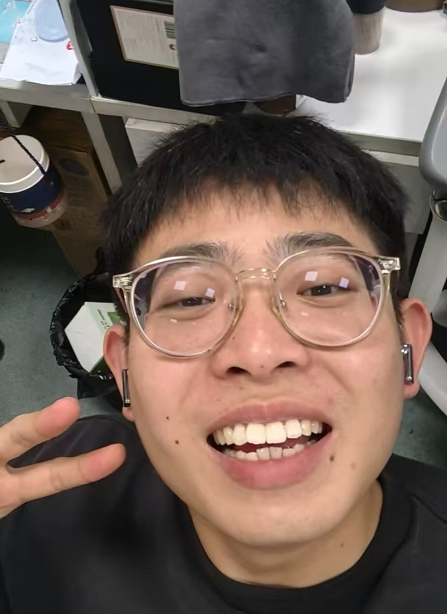

AI-guided Ionizable Lipid Design
Computational and experimental investigation of structure-activity relationships in ionizable lipids for RNA delivery.
Biomaterials · Lipid Nanoparticles (LNP) · AI for Science
“I'm not going there to die. I'm going to find out if I'm really alive.”
— Spike Spiegel, Cowboy Bebop

Hi, Boyang Lin's here!
I'm currently a PhD student (2025) majored in pharmacy, Shanghai Jiaotong University, School of Pharmaceutical Sciences (Supervisor: Prof. Xueqing Zhang).
My interests span: molecular design, RNA delivery, biophysics, and data- and physics-driven modeling of biological processes.I will win my own academic reputation in the future.
Computational and experimental investigation of structure-activity relationships in ionizable lipids for RNA delivery.
Studying protonation-dependent behavior, and lipid-RNA interactions to understand the physical basis of LNP performance.